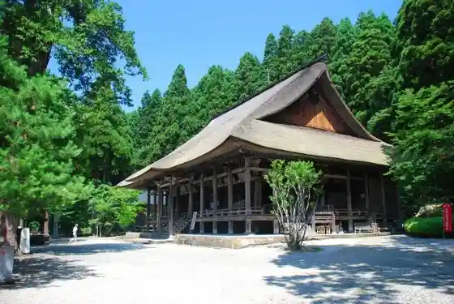
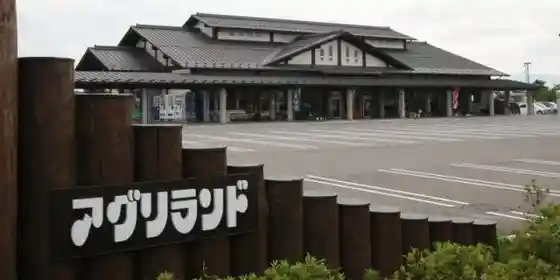
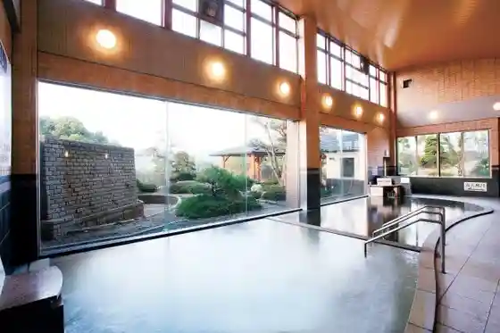

Roadside Station (Sagae) Cherii Land
Sagae, Yamagata · 10237-86-1818 20237-86-3111 · Official / source link
Honzan Jion Tera
Sagae, Yamagata · 0237-87-3993 · Official / source link

Aguri Land Sanchoku Center
Sagae, Yamagata · 0237-84-7888 · Official / source link

Sagae Hanasaki Ka Onsen Yu Cherii
Sagae, Yamagata · 023-783-1414 · Official / source link

Furusawa Shuzo Museum
Sagae, Yamagata · 0237-86-5322 · Official / source link
Sagae Onsen
Sagae, Yamagata · 0237-86-8866 · Official / source link
Saijo Kawa Furusato General Park
Sagae, Yamagata · 0237-83-5195 · Official / source link
Sagae Onsen Ashiyu
Sagae, Yamagata · Official / source link
Jion Tera Terasu
Sagae, Yamagata · 0237-84-6811 · Official / source link
Ichigo Kari
Sagae, Yamagata · Official / source link
Murayama Chiiki no Saikurutsurizumu
Sagae, Yamagata · Official / source link
Sagae Park
Sagae, Yamagata · 0237-85-1682 · Official / source link
Sagae Kanko Wankointakushii Seido
Sagae, Yamagata · Official / source link
Budo Kari
Sagae, Yamagata · 0237-86-1811 · Official / source link
Sagae Hachiman Shrine
Sagae, Yamagata · Official / source link
Sakurambo Saikuringurodo
Sagae, Yamagata · Official / source link
Ni no Seki Shinsui Park
Sagae, Yamagata · 0237-86-5112 · Official / source link
Sagae Art Museum
Sagae, Yamagata · 0237-86-5111 · Official / source link
Nagaoka Yama Cho Nen Tera (Shingonshu) / Saijo Sanju San Kannon Dai 16 Ban Nagaoka Kannon
Sagae, Yamagata · 0237-86-0016 · Official / source link
Guriba Sagae
Sagae, Yamagata · 0237-85-1158 · Official / source link
Sagae Kyodo Kan
Sagae, Yamagata · 0237-86-8231 · Official / source link
Dewa Meisatsu San Tera Mairi
Sagae, Yamagata · 023-695-2816 · Official / source link
Hayama (Sagae Murayama City)
Sagae, Yamagata · 0237-85-1692 · Official / source link
Nambu Kanko Sakurambo Sono
Sagae, Yamagata · 0238-86-1811 · Official / source link
Hayama City Tami So
Sagae, Yamagata · 0237-87-5037 · Official / source link
no Bariakuraimingujimu
Sagae, Yamagata · 0237-84-0207 · Official / source link
Sagae Shinyo Hall
Sagae, Yamagata · Official / source link
Chiyotoshi Tora Ya
Sagae, Yamagata · 0237-86-6133 · Official / source link
Taira Shio Kumano Shrine
Sagae, Yamagata · 0237-86-0165 · Official / source link
Ikoi Forest
Sagae, Yamagata · 0237-87-5151 · Official / source link
San Izumi Kanko Sakurambo Sono
Sagae, Yamagata · 0237-86-1811 · Official / source link
Buruberii Kari
Sagae, Yamagata · 0237-86-1811 · Official / source link
Sakurambo Village Kanko Boranteiagaido no Kai
Sagae, Yamagata · 0237-84-6811 · Official / source link
Hita Kanko Sakurambo Danchi
Sagae, Yamagata · 0237-86-1811 · Official / source link
Ishimochi Hara Kanko Sakurambo Sono
Sagae, Yamagata · 0237-86-1811 · Official / source link
Gassan Shuzo
Sagae, Yamagata · 0237-87-1114 · Official / source link